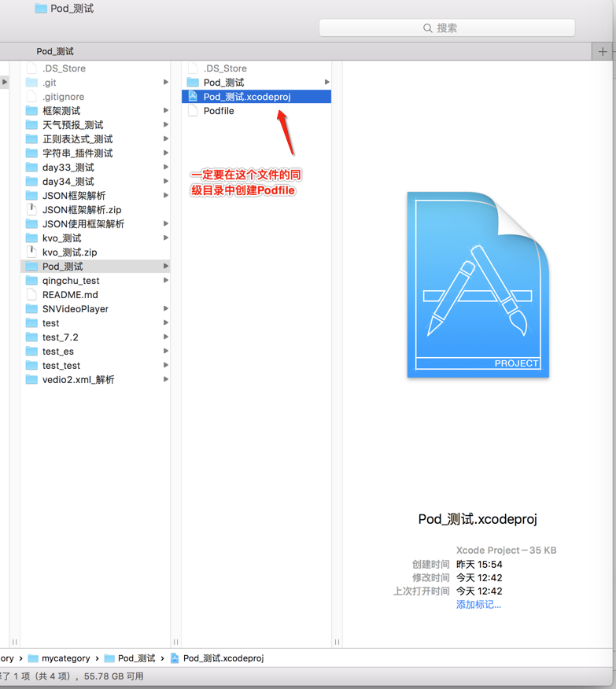
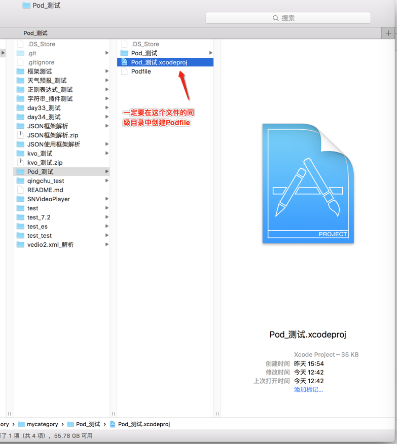
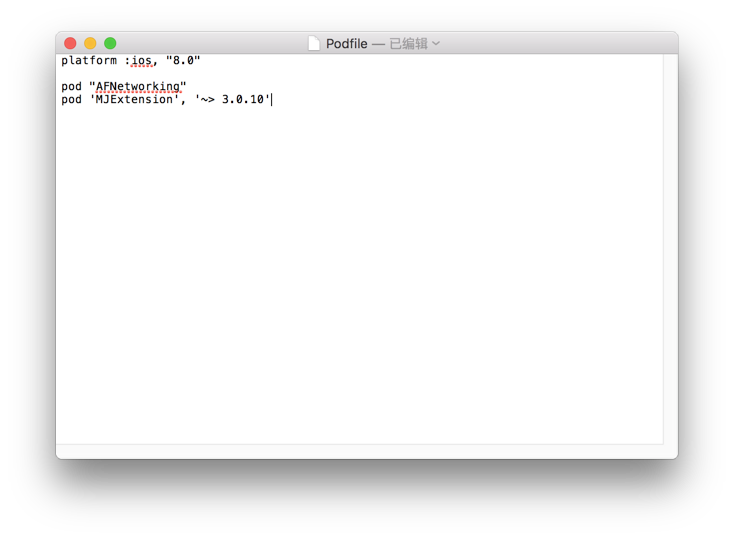
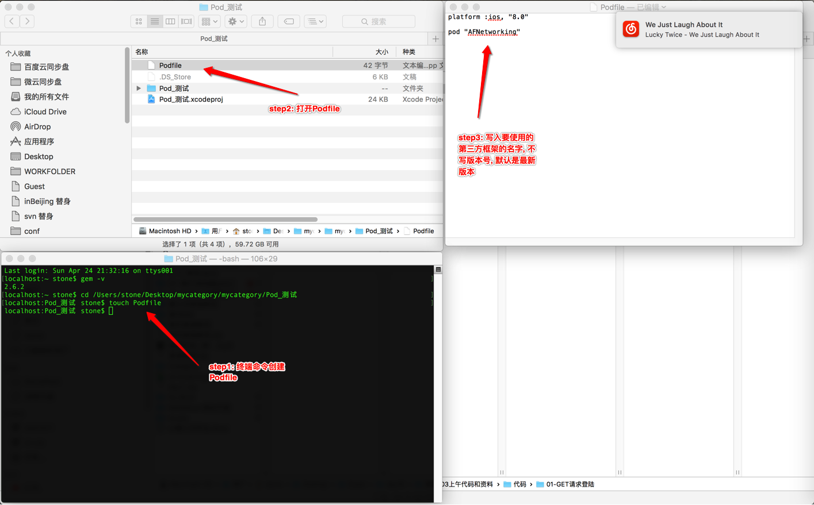
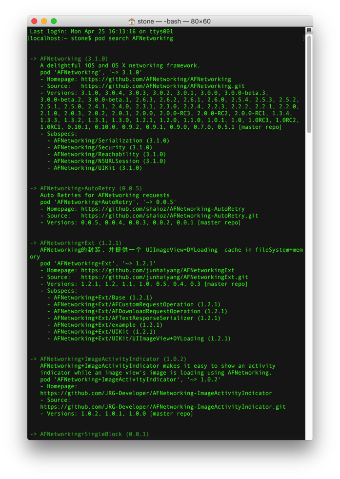
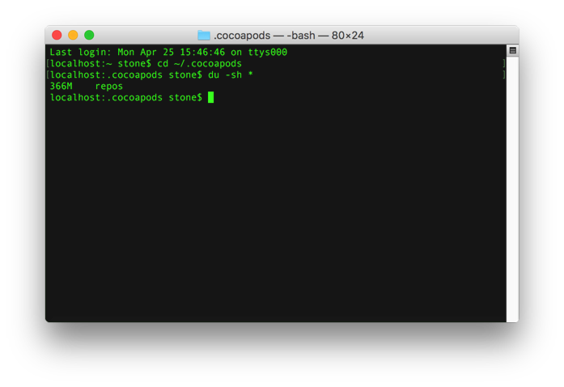

@(开发笔记)
cocoapods-record
[TOC]
官方
更换国内taobao镜像
$ gem sources -l
$ gem sources --remove https://rubygems.org/
$ gem sources -a https://gems.ruby-china.com/
$ gem sources -l
CocoaPods安装
$ sudo gem install cocoapods
如果不行就
$ sudo gem install -n /usr/local/bin cocoapods
安装成功后，接着执行命令：
$ pod setup
如果卡在这里里很长时间的话 请看文档最下方...(判断是否掉线...)
这一步不是必须的 如果Ruby环境不够新，可能需要更新以下：
$ sudo gem update --system
搜索第三方框架,看看成功安装与否...
$pod search AFNetworking
创建Pod文件
进入工程目录中...
touch Podfile
open Podfile
 

platform :ios, "8.0"
pod "AFNetworking"
pod 'MJExtension', '~> 3.0.10'

合起来的操作就是这样... 进入工程目录文件夹下创建 Podfile 
搜索一个第三方类库：
$ pod search AFNetworking

安装第三方框架
$ pod install (建议直接用pod install --verbose --no-repo-update)
如果遇到pod install或者pod update长时间卡在Updating local specs repositories 取消命令 control + c
安装
$ pod install --verbose --no-repo-update
更新
$ pod update --verbose --no-repo-update
判断是否掉线...
还有一点需要注意，pod setup在执行时，会输出Setting up CocoaPods master repo，但是会等待比较久的时间。这步其实是 Cocoapods 在将它的信息下载到 ~/.cocoapods目录下，如果你等太久，可以试着 cd 到那个目录，用du -sh *来查看下载进度
cd ~/.cocoapods
du -sh *
